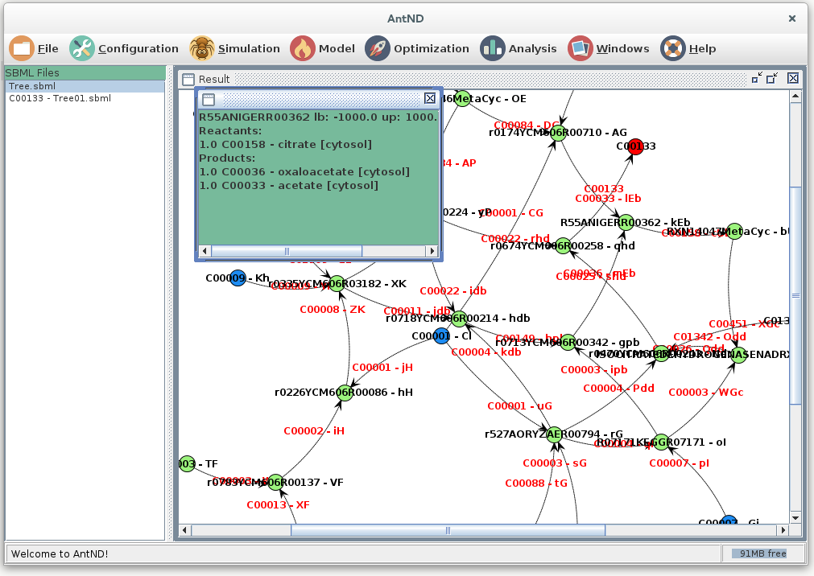

This program is meant to be a help for the manual curation and visualization of metabolic models in SBML format.

This program is able to open SBML files containing a metabolic model. Given a set of compounds used as a source (they can be represented inside the metabolic model as an exchange reactions with lower bound < 0), it can calculate one or more of the shortest paths from the sources to an user defined compound. This resulting path or subnetwork can be visualized in the same program or exported as and SBML file which will be a subset of the initial one.
The program can perform simple Flux Balance Analysis using the R package sybil. For that reason, the integration of this java program with R
must be defined in the initial files (startND_Linux.sh, startND_MacOSX.command or start_Windows.bat):
You will need to correctly configure the following:
This software can modify the model by adding or removing reaction. Any change will be recorded for each model in a text file that will be saved during the project saving. The user is allowed to add comments or modify this file. It can be accessed by selecting the model in the left part of the screen and pressing the right button of the mouse. In the menu the option "Show changes" must be selected.
It can list all the reactions in the selected model or search for specific reaction and the same for the compounds. It contains a module for the comparison of two models but it only works when the two models share IDs.
The different networks or SBML files can be combined in a single SBML file using the option "Combine" that appears using the right button of the mouse after selecting the models you want to combine.
To analyze the resulting subnetworks or the main metabolic models, the program contains several algorithm to cluster the nodes or obtain specific subnetworks based on neighborhood.